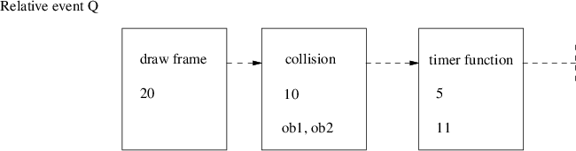

$ mkdir -p $HOME/Sandpit
$ cd $HOME/Sandpit
$ git clone https://github.com/gaiusm/pge
$ cd $HOME/Sandpit
$ mkdir -p build-pge
$ cd build-pge
$ ../pge/configure --enable-langc
$ make
$ cd $HOME/Sandpit/build-pge
$ ./localrun.sh
../pge/examples/trapped/trapped.py

AS_MKDIR_P(c)
AS_MKDIR_P(m2)
AS_MKDIR_P(python)
LT_INIT
...
AC_ARG_ENABLE([maintainer],
[ --enable-maintainer Turn on maintainer],
[case "${enableval}" in
yes) maintainer=true ;;
no) maintainer=false ;;
*) AC_MSG_ERROR([bad value ${enableval} for --enable-maintainer]) ;;
esac],[maintainer=false])
AM_CONDITIONAL([MAINTAINER], [test x$maintainer = xtrue])
...
AC_HAVE_LIBRARY(-lpth)
AC_SUBST([langm2])
AC_SUBST([langc])
AC_SUBST([maintainer])
This document was produced using groff-1.22.